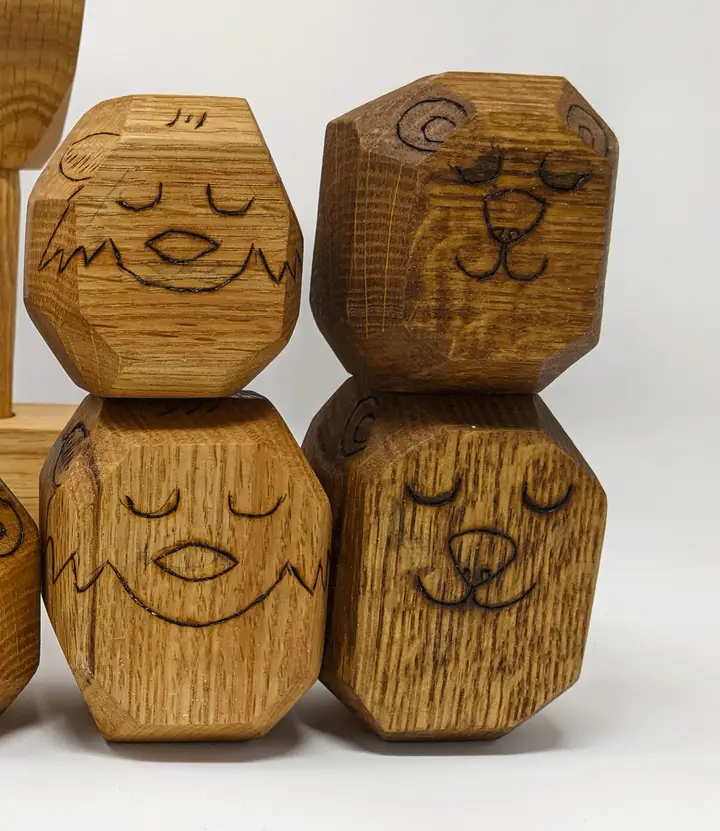
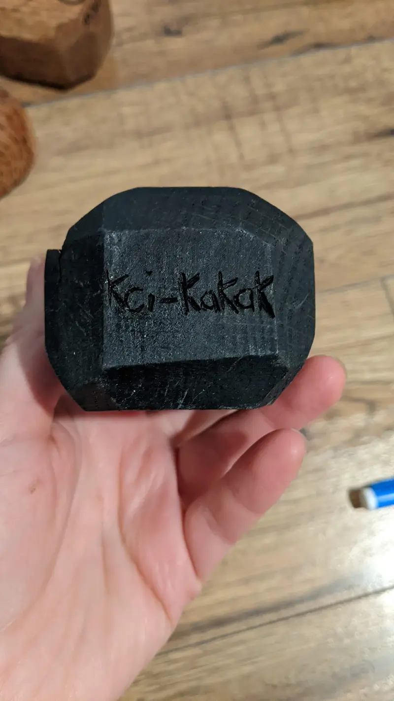
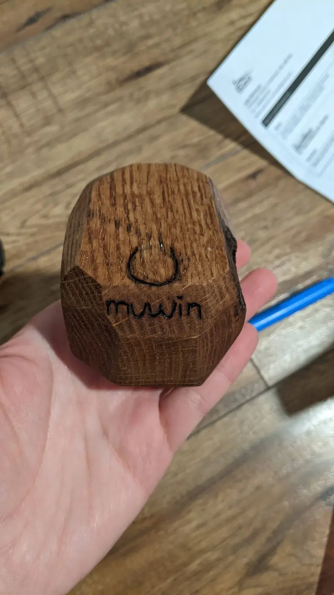
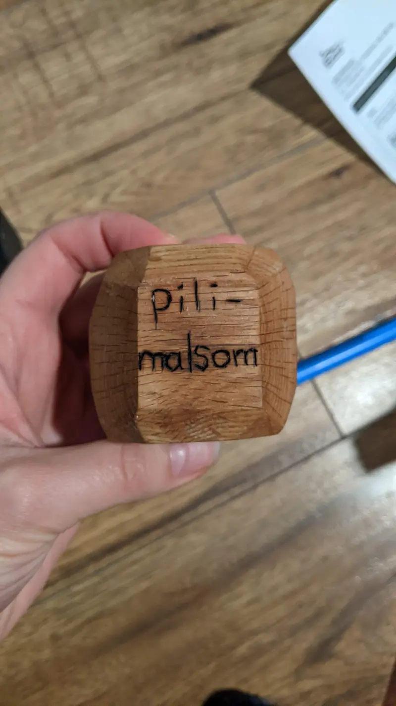
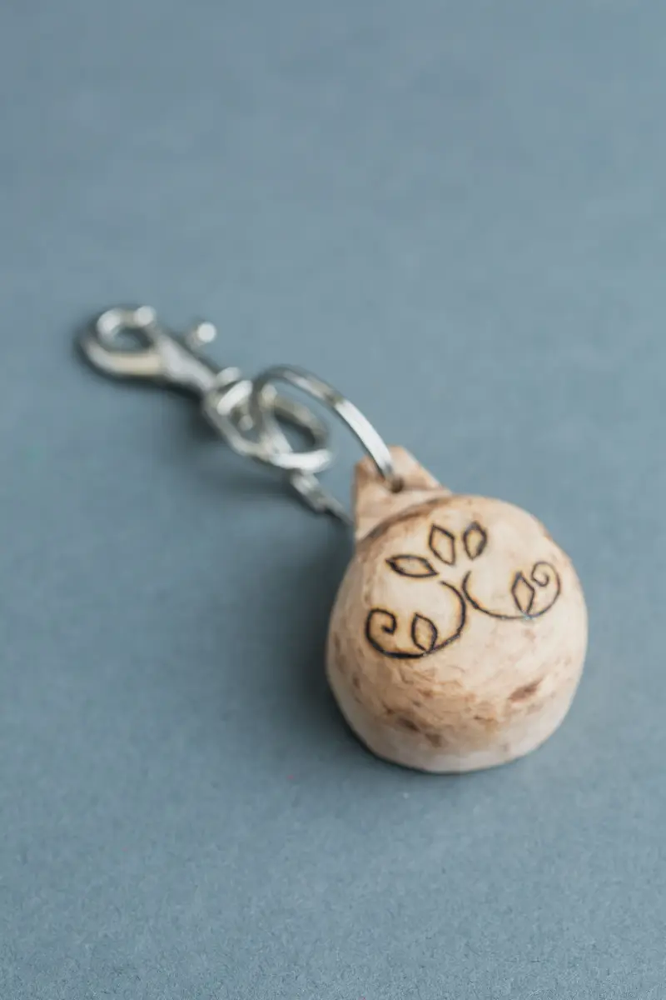
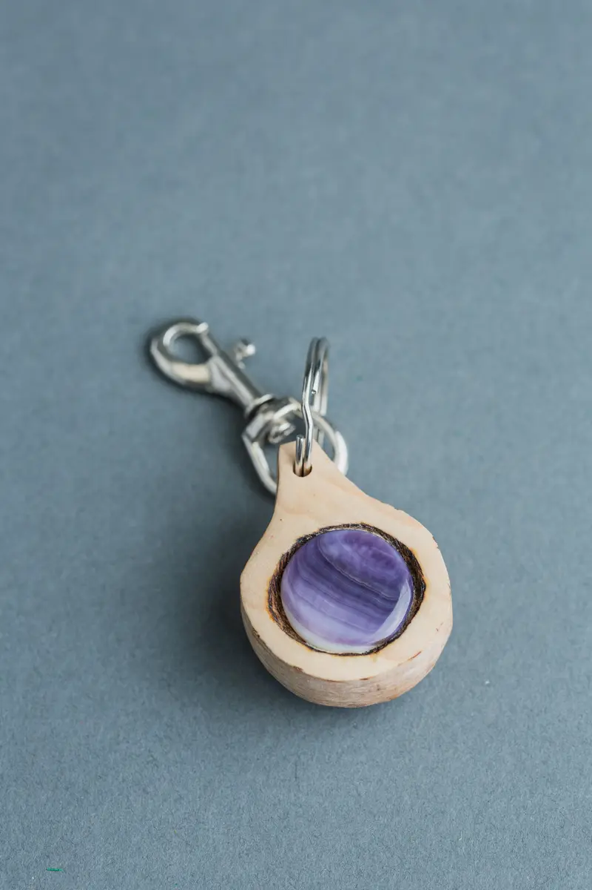
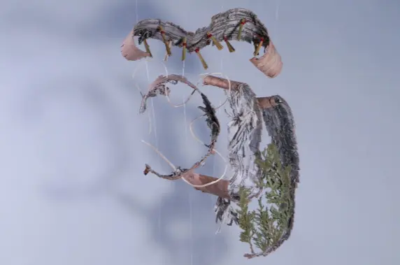
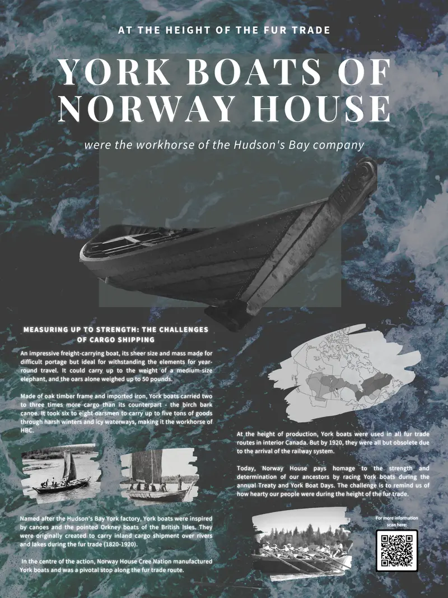
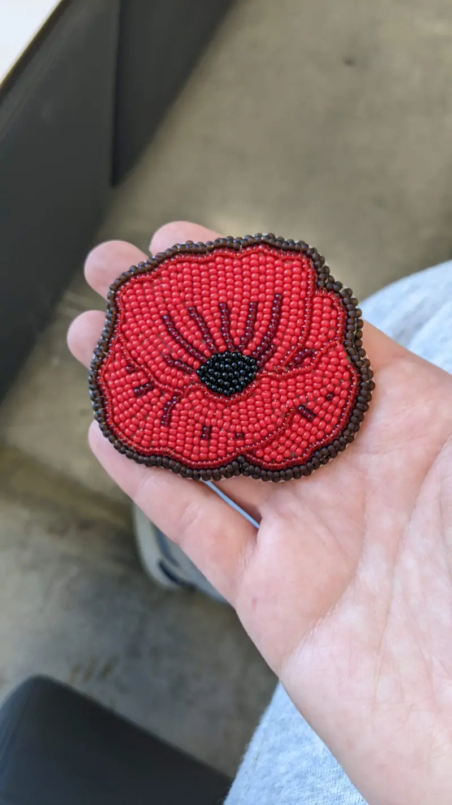

Relational objects grounded in Indigenous material practice
Material practice
Objects made to be handled, passed around and talked over. Each one began with a place, a teaching or a person, and asks how a small thing can shape the way people gather, wait, play or remember.
In the fall of 2022 I visited my First Nation community, Fisher River, for the first time. Using poetic observation methods inspired by Jane Fulton Suri, I let moments of significance and the environment affect me without seeking answers right away: rivers in autumn leaves, old boats, wide landscapes of trees no taller than a two-storey house, conversations over lunch and in a women’s talking circle.
The puzzle that came out of that percolation is about home. From the centre outward, a mother and child hold each other, the child is held by a York boat, the mother is wrapped by the sun and the sun is held by the wide sunset fading into twilight. The three purple shades of the sky are what a member of the circle described to me as healing colours; the braids are medicine, like the sweetgrass I was gifted.
The pieces are meant as a vehicle for storytelling. Individually, they become prompts for teachers, parents and Elders to share stories about home, nature, medicine, youth and love. On presentation day, the class formed a circle as they tried their hands at putting it back together.




02
Balancing toy
2022 · Oak
A balancing game where each animal block must be placed on the eagle’s wings without everything tipping over. The Wolastoqey (Maliseet) word for each animal is wood-burned on its back, and each part of the eagle can be taken apart.
The design is part of an ongoing effort to explore language and cultural revitalization through accessible play: learning a word by holding it, and laughing when it falls.


03
Double curve keychains
2022 · Maple, quahog shell
Keychains wood-burned with either the double curve motif or an affirmation written in Maliseet, made while I was studying Aboriginal Visual Arts at the New Brunswick College of Craft and Design.
The intention was to bring wampum shell back into everyday conversation and make it part of daily life. Five dollars from each sale went to a land-based Wolastoqiyik language initiative.

04
Deconstructed basket
2020 · White birch bark, spruce root, sweetgrass, cedar leaves, sage, nylon
Inspired by the traditional birch basket, this mobile sculpture displays raw material normally held in a practical, detailed and meticulous shape. What a basket normally holds instead surrounds and supports it.
It’s a playful study on how to display rather than confine what heals us, and those things in turn become the pillars that support us. Made over four self-led days from medicinal plants, discarded birch bark and wire, after a season learning to harvest bark and spruce root with our teachers.

05
York boat paddle
2021 · Salvaged birch
I wanted to experience carving a paddle from start to finish: sourcing the wood and using both mechanical and hand tools. I wanted to feel some of the arduous work of creating a vessel that carried people and precious material, and to understand that the significance of the York boat is less in its size than in the intense exertion it takes to make and maintain one for decades. The work was mesmerizing, and drew a focus that carried me through the weariness of repetitive work in my body.
York boats carried up to five tons of goods through harsh winters and icy waterways during the fur trade, rowed by six to eight oarsmen with oars weighing up to fifty pounds. Norway House Cree Nation built them and was a pivotal stop on the route. Today, Norway House honours the strength of our ancestors by racing York boats during the annual Treaty and York Boat Days. The York boat has been my long-standing muse ever since; it sails through the centre of the Coming Home puzzle.

06
Poppy brooch
2022 · Beadwork
A beaded poppy for Remembrance Day. Beading is a way of preserving, honouring and carrying stories; a small object worn close to the body.